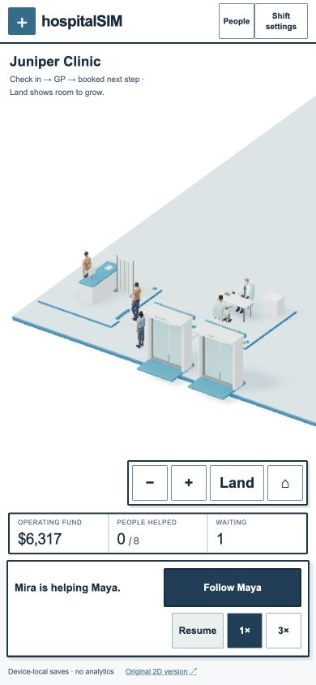
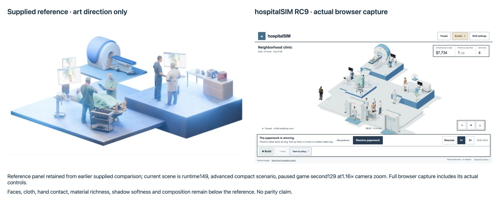

RC9 / runtime 150 · November 6, 2026. Substantial AI assistance. A playable engineering prototype; enjoyment and usefulness remain unvalidated.
Build reception and hire Quinn to open immediately. Build and hire the GP while the first arrival checks in. The first three booked visits need only the GP. Four seeded arrivals enter during the first minute, with a later pharmacy need. Construction stays live; pause remains available. After the first fee, the next capacity action follows the actual queue.
Initial checkpoint and complete event log
Native browser capture, game 0–90;90.868 real seconds. First GP built/staffed at 4; first consultation fee at 49; Maya exits at 61. Two completed visits by 90. A second staffed reception is placed at 80. Canvas recorder captions summarize HTML actions; menus are not filmed. Public movie is losslessly indexed for seeking, with no synthetic frames. Runtime146 recording uses the same RC9 model;149 fixes phone camera/control layout and scales the queue prompt by actual room count. Exact model replay matches every action, fee, visit and final count.
Blender 4.0.2 executed the retained Python generator and saved editable first_minute_motion.blend. Thirteen original rigs now have shorter distance-driven walking strides and planted-foot SeatDown, SeatUp and Sit clips. Routes preserve obstacle clearance and round only safe corners. Small conversation gestures alternate during actual seated service. Maximum measured authored support drift is2.26mm; exported chair foot drift is0.63mm. These are clip checks, not a claim of perfect in-game foot contact.

390×844 in-app Chromium on AppleM2, mobile30 render profile. Opening placement, both first hires, live arrivals, consultation, revenue, discharge, extra paid reception/admin, pause and reduced motion exercised. No horizontal overflow; visible primary controls measured at least44px high. No unresolved application errors observed. This is desktop narrow-viewport testing, not a physical iPhone/Safari result.
The native replay and deterministic paired test are reproducible in source. In the paired seed431 model run, staffing a second reception at 51 reduced all-arrival waiting ticks from 282 to 230 by 180, with 3 completed in both runs and higher expenses. The bottleneck moves; extra capacity does not guarantee more completions. Not an educational outcome or player study.
Initial 65 GLBs:6,357,443gzip bytes measured locally, plus runtime files; optional equipment stays lazy. The phone scene observed 49,409 main-pass triangles /57 calls with three patients and two staff. An 1800-frame pooled phone-width sample was 33.41ms mean /50ms95th percentile, AppleM2. Timing includes inspector and pause/resume activity; not an isolated device benchmark. A later run during host dependency/build work measured 42.49ms mean /100ms p95 and a 1.60s placement preparation stall; pickup preparation 45.2ms. Runtime149 contended results are retained as the failure trace. Runtime150 ranks candidates before validating and stops after32 valid suggestions; the actual app-function regression returns identical sites with41/36 opening checks instead of192. Final390px browser retest:13.4ms reception /10.6ms GP placement preparation. Host load differed; these samples do not establish physical-phone latency. Dense estates still exceed the provisional graphics budget.

Actual runtime 149 comparison: advanced compact scenario at game129, paused,1.16× camera zoom. Reference panel retained from the supplied earlier comparison. The right panel is a fresh unretouched browser capture including its controls. It is not evidence of visual parity. The new opening deliberately begins with empty land rather than three fully furnished medical zones.
Faces, fingers, fabric folds, hair, hand-to-equipment contact, shadows, material richness and ensemble composition remain below the supplied reference. Characters remain procedural and task contact approximate; queues are rigid. No claim that this is production-ready, more fun than Two Point Hospital, or validated for learning. Physical iPhone play, independent usability sessions and a full accessibility audit remain pending.
Editable source, Blender files, scripts and evidence · Unperformed evaluation protocol